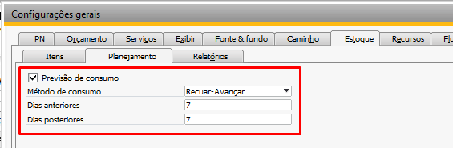
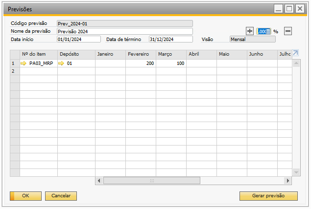
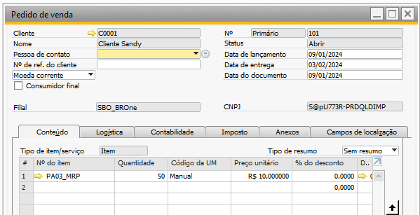
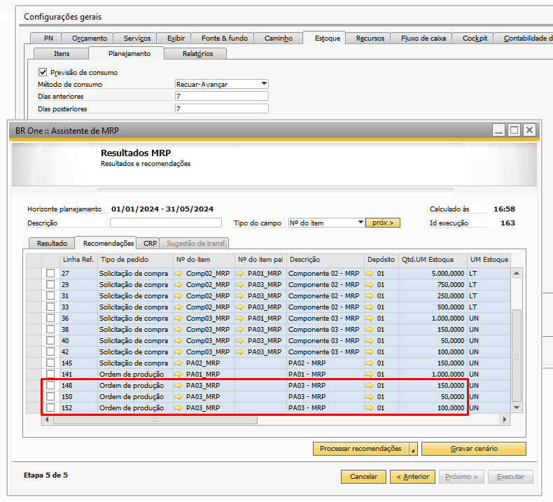
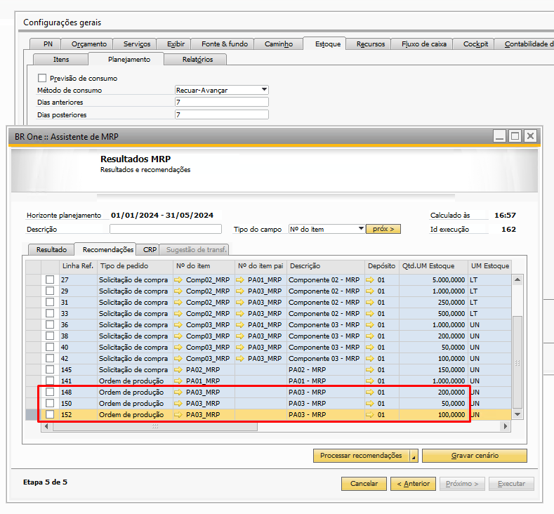

Previsão por consumo
Para utilização de previsão de vendas, são levados em considerações algumas configurações de previsão de consumo para realização das recomendações.
Para ter acesso é necessário ir no menu:
Administração -> Inicialização do sistema -> aba Estoque -> aba Planejamento
Ao utilizar o processo de ‘Previsão de Venda’ o mesmo poderá considerar os pedidos de venda realizados no período definido nas configurações do SAP, através da previsão de consumo, informando a quantidade de dias que serão avançados e quantidade de dias que serão recuados, e determinar qual será a ordem de validação.
Importante destacar que a previsão por consumo, sempre irá realizar a validação de avanço/recuo dos dias, em relação a data de entrega do Pedido de Venda.
É possível visualizar um exemplo da utilização de ‘Previsão’ com consumo no MRP no tópico ‘Previsão de consumo’.
A previsão de consumo é um processo onde as quantidades consideradas nas previsões de vendas são abatidas das quantidades dos pedidos de venda inseridos no período considerado no MRP e dentro dos dias informados nas configurações gerais.
Esse processo pode ser ativado ou desativado nas configurações gerais.
{kind=link}
A ‘Previsão de consumo’ é determinada pelo ‘Método de consumo’, o mesmo pode ser configurado para avançar e depois recuar ou recuar e depois avançar os dias estabelecidos nas configurações, dias anteriores e dias posteriores.
Portanto, se ativo, a quantidade recomendada pelo MRP para a compra ou produção do item através da ‘Previsão’ selecionada será subtraída das quantidades de ‘Pedido de venda’ existentes no período encontrado com base nas configurações dos parâmetros acima.
No exemplo abaixo, manteve-se as configurações na imagem acima. Utilizado uma previsão de venda do produto acabado PA03_MRP para os meses de fevereiro e março com o valor 200 e 100, respectivamente:
{kind=link}
Um pedido de venda para o PA008 com quantidade igual a 50 e entrega em 3 de fevereiro:
{kind=link}
Nas configurações do MRP, foi selecionado como fonte de dados os ‘Pedidos de venda’ e a previsão Prev_2024-01.
Ao executar o MRP, teremos a recomendação de três linhas para o PA03_MRP, a primeira e a terceira linha são as recomendações para atender a ‘Previsão de vendas’, a segunda linha é a recomendação para atender ao ‘Pedido de venda’.
Com o parâmetro ‘Previsão de consumo’ marcado, a quantidade da ‘Previsão de venda’ para o mês de junho será abatida pela quantidade do ‘Pedido de venda’, teremos então uma recomendação de 150 peças, isso ocorre pois a data a previsão de consumo está configurada para “Recuar-Avançar” por 7 dias anteriores e 7 dias posteriores, considerando assim a data de entrega do pedido de venda:
{kind=link}
Se desativarmos o parâmetro, essa subtração de quantidades não ocorrerá e será recomendado pelo MRP a quantidade total da ‘Previsão de venda’ e a quantidade do ‘Pedido de venda’:
{kind=link}